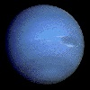

|
|
 |
|
|
|
|---|---|---|---|---|
| Mars | Neptune | Saturn | Venus | |
| Mass (kg) | 6.42x1023 | 1.02x1026 | 5.69x1026 | 4.87x1024 |
| Diameter (km) | 6787 | 49528 | 120660 | 12104 |
| Mean density (kg/m3 | 3940 | 1640 | 690 | 5250 |
| Escape velocity (m/s) | 5000 | 233000 | 35600 | 10400 |
| Average distance from Sun | 1.524 AU (227,936,640 km) | 30.07 AU (4,498,252,900 km) | 9.537 AU (1,426,725,400 km) | 0.723 AU (108,208,930 km) |
| Rotation period (length of day in Earth days) | 1.026 | 0.67 (19.1 hours) | 0.44 (10.2 Earth hours) | 243.02 (retrogade) |
| Revolution period (length of year in Earth days) | 686.98 | 60,190 (164.8 Earth years) | 29.46 | 224.7 |